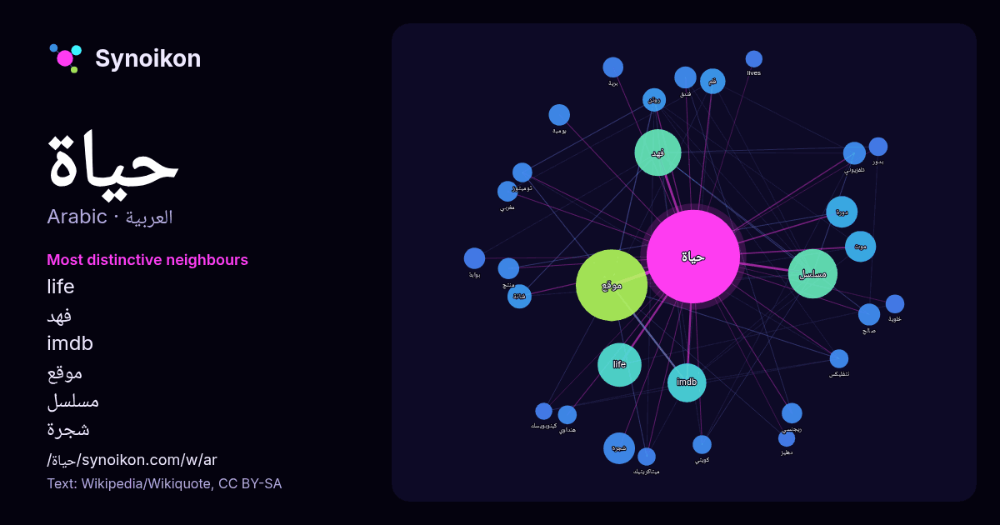

العربية · كلمة شائعة
حياة
“life” · الكلمات الموجودة حولها في 1331 ورودًا من ويكيبيديا, Wikiquote.

الجيران الأكثر تميّزًا
- life 59×
- فهد 56×
- imdb 46×
- موقع 38×
- مسلسل 25×
- شجرة 22×
- روتن 18×
- موت 16×
- فنانة 15×
- فلم 15×
- ريجنسي 14×
- توميتوز 13×
- دورة 13×
- هنداوي 12×
- فندق 11×
- نتفليكس 11×
- بوابة 11×
- تلفزيوني 11×
- ميتاكريتيك 11×
- يومية 10×
× = كم مرة أكثر مما في نصوص ويكيبيديا العامة.
الجيران الأكثر تكرارًا
- موقع 160
- مسلسل 76
- فهد 68
- life 60
- imdb 47
- كتاب 44
- فيلم 43
- محمد 35
- دورة 31
- شجرة 31
- موت 30
- انسان 27
- ارض 24
- عبد 24
- عربية 22
- قاعدة 22
- ادارة 21
- جديدة 21
- فلم 20
- الله 19
في السياق
- scientific study of life حياة اصطناعية Artificial life حياة خارج أرضية Extraterrestrial life حياة خلوية Cellular life حياة لاخلوية Non-cellular life Wikipedia snippets · حياة
- "وفاة الفنانة الكويتية حياة الفهد بعد مسيرة فنية حافلة". جريدة الراي. اطلع عليه بتاريخ 2026-04-21. سيدة الشاشة الخليجية الفنانة حياة الفهد لدنيا الوطن: بدون Wikipedia snippets · حياة الفهد
- original on 2017-02-16. Retrieved 2017-01-14. صفحة حياة سندي الشخصية على موقع بوب تِك. مدونة حياة سندي. حياة سندي في المشاريع الشقيقة وسائط من كومنز اقتباسات Wikipedia snippets · حياة سندي
- حياة في الوحل تعديل - تعديل مصدري - تعديل ويكي بيانات حياة في الوحل هو فيلم تلفزي مغربي من إخراج ميلود الحبشي سنة 2012، و بطولة كل من نعيمة المشرقي، محمد Wikipedia snippets · حياة في الوحل
- "قصة مسلسل حياة لا تشبهني وعدد الحلقات". موقع أطروحة. مؤرشف من الأصل في 2024-01-17. اطلع عليه بتاريخ 2024-01-17. طاقم العمل: مسلسل - حياة لا تشبهني - Wikipedia snippets · حياة لا تشبهني
- حياة السجن الحكيمة على موقع IMDb (الإنجليزية) حياة السجن الحكيمة على موقع نتفليكس (الإنجليزية) حياة السجن الحكيمة على موقع كينوبويسك (الروسية) حياة السجن Wikipedia snippets · حياة السجن الحكيمة
- حياة الآخرين Das Leben der Anderen (الألمانية) ملصق الفيلم تعديل - تعديل مصدري - تعديل ويكي بيانات حياة الآخرين (الألمانية: Das Leben der Anderen) فيلم Wikipedia snippets · حياة الآخرين
- حياة (الإنجليزية: Life) هو فيلم رسوم متحركة كوميدي قصير. صدر الفيلم يوم 12 نوفمبر 1999. "معلومات عن حياة (فيلم 1999) على موقع imdb.com". imdb.com. مؤرشف Wikipedia snippets · حياة (فلم 1999)
كلمات أخرى
- أغنية
- إله
- تاريخ
- جبل
- جرس
- جزيرة
- جسر
- حديقة
- حصان
- حقيقة
- خبز
- خريطة
- خريف
- ذهب
- زمن
- ساعة
- شاي
- شتاء
- صحة
- صحراء
- صمت
- صيف
- طبيعة
- طريق
- طعام
- ظل
- عائلة
- عاصفة
- عسل
- علم
- عمل
- غابة
- فن
- قطار
- قطة
- قلب
- قوة
- كلب
- لغة
- ماء
- مال
- مدينة
- مرآة
- مطر
- ملح
- مناخ
- موت
- نجم
- والدة
حُسبت مسبقًا في 2026-10-09 بالإعدادات الافتراضية (±5 كلمات، مدوّنة متوسطة). يمكن للخريطة التفاعلية تحديثها ببيانات حية.
واجهة مترجمة آليًا؛ نرحب بالتصحيحات.